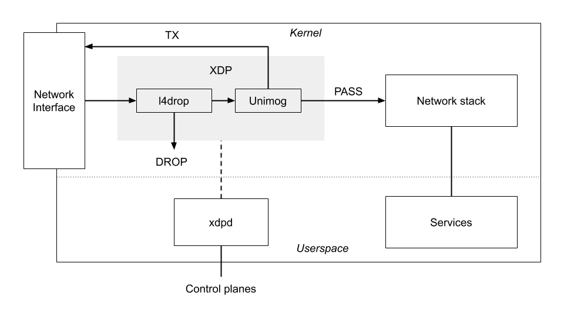
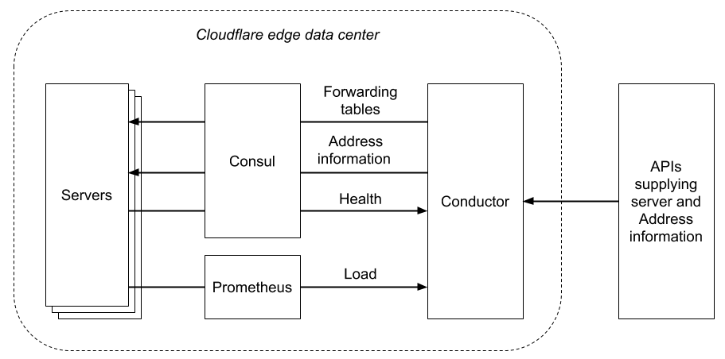

Day 1: cloudflare 的四层代理架构¶
https://blog.cloudflare.com/unimog-cloudflares-edge-load-balancer/
首先，一个边缘机房中的服务器的角色都是对等的，共享一组 VIP。发给这些 ip 的数据包可以被任意服务器来处理。
每个服务器上的 l4lb 架构如下：
l4drop 是 ddos 丢包程序，unimog 是 4 层代理，xdpd 是 l4drop 和 unimog 的控制程序。
l4drop 和 unimog 都是基于 xdp 来实现。一个简单的 xdp load balancer 代码，https://gist.github.com/summerwind/080750455a396a1b1ba78938b3178f6b 也就是架构图中灰色部分代码大概是这个样子的，都是实现一个 callback 函数，然后通过返回 drop/tx/pass 等返回码等来继续处理包。
unimog 选择转发的目标机器如果为本机，直接 xdp pass 就可以，如果目标机器是其他机器，要将包的目标 ip 替换为替换为目标机器 DIP（Direct IP），并且使用 GUE (Generic UDP Encapsulation) https://www.ietf.org/id/draft-ietf-intarea-gue-09.txt 格式重新封一下包（以保存原始的目标地址），然后返回 xdp tx 将包直接重新发出去。
封包的逻辑可以参考：https://github.com/facebookincubator/katran/blob/master/katran/lib/bpf/pckt_encap.h
unimog 中 c 代码部分，也就是上图中灰色的部分，这部分的代码按 cloudflare 博客中说的，大概代码量也就在 1000 行左右。
比较复杂的还是在 xdpd 和中心控制的 conductor 程序上。这个整体的架构如下：
- xdpd 和 conductor 之间通过 consul 来间接通信。
- 服务器的监控用的是 prometheus，conductor 从 prometheus 获取数据。
- 控制程序这一块比较复杂的主要就是在 server 配置变化（上线、下线、修改权重）等情况下如何保持已经建立连接的包还是发到之前的目标服务器，而不是发错服务器导致连接被 reset，unimog 用的是 forwarding table（保存新旧配置以计算新旧服务器）+glb redirect（如果转发错了，将包重新转发给正确的目标服务器）。这个还有待细节搞清楚。
最简单的 4 层代理方式，不封包的情况是 haproxy blog 中说的以下架构，只改包的 Dst MAC。
https://www.haproxy.com/blog/layer-4-load-balancing-direct-server-return-mode/
其他：
- cloudflare 和 cilium 一起开发的一个 go ebf 库：https://github.com/cilium/ebpf
- https://github.com/xdp-project/xdp-tutorial
- 使用 xdp 需要内核版本 >= 4.8，如果需要使用 AF_XDP socket family 的话需要 >= 4.18（unimog 可能不需要使用这个？）。